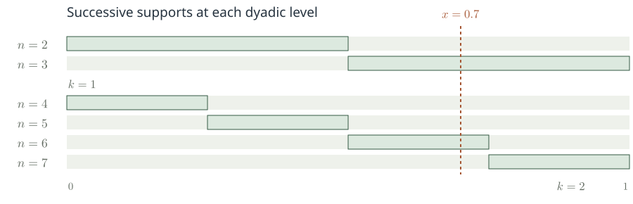
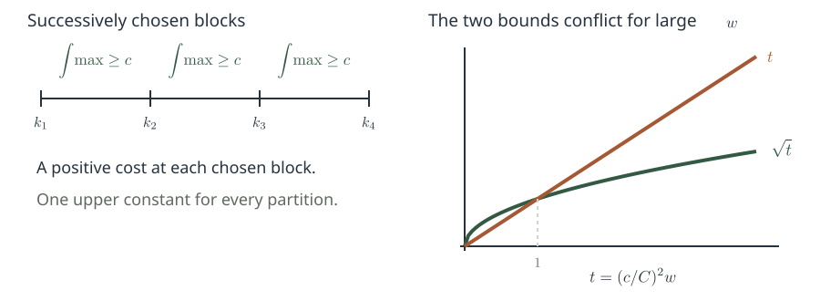
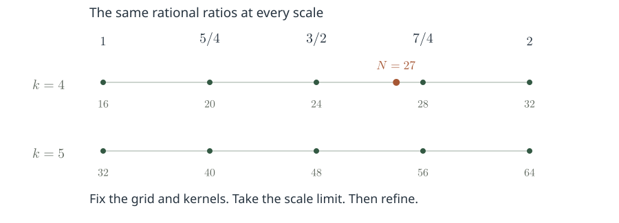
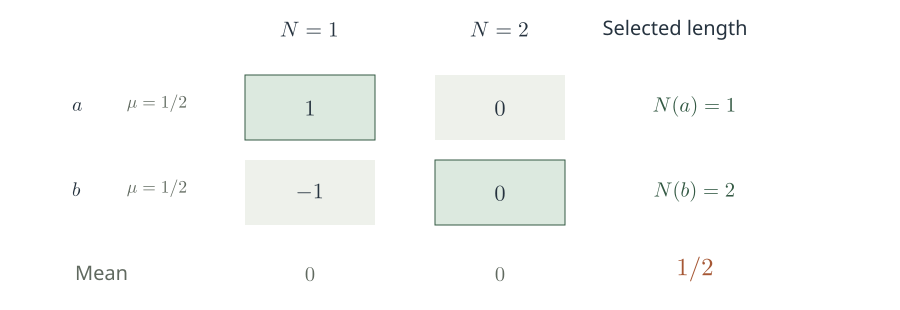
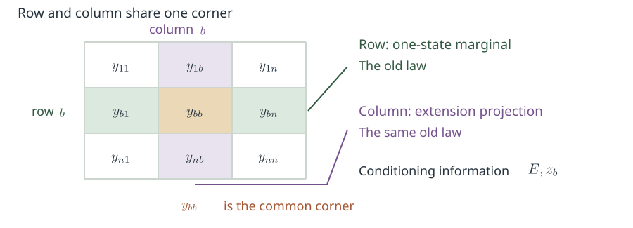

Topic Summary · About 43 minutes
Pointwise convergence of multiple ergodic averages
One starting point, different speeds.
When do long-term orbit averages
converge almost everywhere to a common product limit?
From oscillation control to joint distributions at selected lengths
Speaker notes · 1.25 min
1 / 22 Pointwise convergence of multiple ergodic averages
The question is the following. Starting from one point, observe a probability-preserving system at different integer speeds. When does the time average of the product converge for almost every starting point? We bring together the results and proof steps of four manuscripts, organizing the discussion around the mathematical difficulties they address.
The first half concerns the passage from norm convergence to pointwise convergence. Its central input is an oscillation estimate uniform over every deterministic partition, together with the scale-varying test functions that occur in its proof. The second half concerns a higher-order difficulty: if convergence fails, the averaging length can be chosen separately for each starting point, changing the joint distribution. We must identify conditional-distribution constraints that survive this selection.
Several deductions will be proved explicitly. For the local harmonic-analytic estimates and higher-order mixing results, we identify their precise roles and positions in the proof.
Technical details and exact references
We use the versions of the four October 4, 2026 manuscripts checked on October 8, 2026. The reference letters serve only to locate sources in the footers: A is the arbitrary-finite-order paper, B the fourfold paper, C the distinct-integer-slope triple paper, and D the basic triple paper. Their order in the summary follows the common mathematical question.
The summary covers the main statements, selected deductions, and structural steps. An independent review of all companion proofs has not been completed. Slide 21 identifies the relevant dependencies.
Original statements · Fixed functions and all integer lengths
The main claims
Let (X,F,μ) be a probability space, with T invertible, bimeasurable, probability-preserving, and mixing. Fix complex-valued fj∈L∞(μ).
Three positions
Fixed pairwise distinct nonzero integers
b1,b2,b3, of either sign.
Any finite number of positions
Fixed d≥2,
(b1,…,bd)=(1,…,d).
All integer lengths; no mixing rate; no standardness assumption. Exceptional sets may depend on the fixed functions.
Direct consequence of A: any fixed finite set of distinct nonzero integer slopes of one sign, with all proof assumptions of A retained.
Speaker notes · 2.5 min
2 / 22 The main claims
This slide collects the common scope of the conclusions. The dynamical assumption is ordinary mixing: correlations between two measurable sets tend to the product as the time separation tends to infinity. No quantitative mixing rate is assumed in the main theorems.
There are two levels of generality in the slopes. The triple result permits any three fixed, distinct, nonzero integers, including mixed signs. The arbitrary-order result is stated for consecutive positive integer slopes. The basic triple and fourfold statements are the three-position and four-position cases of that family, but their proofs supply different tools used later. Inserting constant functions also gives a direct consequence for distinct positive slopes; all-negative slopes follow by applying the same result to the inverse transformation.
In each case, the tuple of functions and the slopes are fixed before almost-everywhere convergence is asserted. The exceptional null set may depend on these data. The original probability space need not be standard. For fixed observables, their integer translates can be mapped into a countable-product standard model, and the conclusion pulled back.
Convergence is claimed through all positive integer lengths, not merely a selected subsequence. The two main parts of the summary explain why this quantifier is difficult.
Technical details and exact references
Sources and direct consequences
The triple result for arbitrary integer slopes is C Theorem 1.1, p.1; the arbitrary-finite-order result for consecutive slopes is A Theorem 1.1, p.1. The basic triple and fourfold statements are D Theorem 1.1, p.2, and B Theorem 1.1, p.1. All four use fixed bounded measurable functions and an invertible, bimeasurable, mixing, probability-preserving transformation.
Under the same assumptions on the system and functions as on this slide, A directly implies the same product limit for a finite set of distinct nonzero integer slopes of one sign. The verification has four steps:
- If all bj>0, take M=max(2,maxjbj). At unused positions of 1,…,M, insert the constant function 1 and apply A.
- If all bj<0, set S=T−1 and cj=−bj>0.
- The inverse is again invertible, bimeasurable, and probability-preserving, and μ(E∩S−nF)=μ(T−nE∩F)→μ(E)μ(F) as ∣n∣→∞, so it is mixing.
- Use Tbjn=Scjn and apply the first step.
This is a direct consequence of the stated theorem, retaining every assumption needed for its proof, rather than an additional theorem. The exceptional null set may depend on the fixed tuple and fixed slopes.
Distinctness matters. Repeated slopes require combining the corresponding functions first, so the limit is the product of the integrals of the combined functions. This consequence does not cover arbitrary higher-order mixed-sign slopes, arbitrary polynomials, or sparse times.
For the standard factor of a fixed tuple, choose bounded representatives and use the map x↦(fj(Tnx))1≤j≤d, n∈Z. Its image distribution lies on a countable product of compact disks, and the shift intertwines with the transformation. The countable union of integer translates of a null set remains null. See A §2.1, p.3.
First difficulty: exceptional lengths along an orbit
A shared starting point imposes a diagonal constraint
The natural product-space measure is μ⊗d.
The initial distribution here is Δ∗μ, where Δ(x)=(x,…,x).
In the nonatomic case, the diagonal may have product measure zero.
A Birkhoff full-measure set for μ⊗d need not control the diagonal initial distribution.
Speaker notes · 1.75 min
3 / 22 A shared starting point imposes a diagonal constraint
The problem can be written as a single average on a product space. Coordinate j of the product transformation runs at speed bj, and the observable is a tensor product. Formally, this looks exactly like a Birkhoff average.
The difference is the initial distribution. The usual probability measure on the product system samples the coordinates separately. Our average requires every coordinate to start from the same x, so the initial points lie on the diagonal. In a nonatomic space, the diagonal may have product measure zero. An almost-everywhere conclusion for the product measure may therefore say nothing about any of the starting points of interest.
The diagram uses two coordinates simply to show where the two measures live. Passing to the product space only rewrites the problem. The joinings used later seek probability distributions that describe the relation between the shared starting point and the different speeds.
Technical details and exact references
The diagonal pushforward Δ∗μ is generally not invariant under S. Even if an argument produces an S-invariant limiting joining, its relation to the original diagonal starting points still needs to be established. No Birkhoff property on the diagonal is assumed here.
This also explains why multiple L2(μ) norm convergence and the product-space Birkhoff theorem answer different questions: the former still integrates over the original starting point x.
The first difficulty · Step 1/2
What does norm convergence leave uncontrolled?
Overall error at a fixed length
At each sufficiently late fixed length,
large errors occupy a small set.
The tail at a fixed point
At the same starting point,
bad lengths eventually stop recurring.
The typewriter sequence: set u1=0. For k≥1 and 0≤j<2k, let
Yet every x∈[0,1) satisfies limsupnun(x)=1 and liminfnun(x)=0.
The first difficulty · Step 2/2
What does norm convergence leave uncontrolled?

Each row is one indicator. Every point is hit once at every level and missed on the other rows. This separates norm and pointwise convergence.
Speaker notes · 1.5 min
4 / 22 What does norm convergence leave uncontrolled?
Norm convergence says that, at each fixed late length, large errors occur only on a small set. Pointwise convergence asks for more: at one starting point, all sufficiently late lengths must be stable simultaneously. The small sets may move with the length. That is the difference between the quantifiers.
The typewriter sequence divides the unit interval into successively finer dyadic intervals and lights one at a time. At each level, every function has squared norm equal to the interval length, which tends to zero. But every starting point is lit once per level and is also zero many times. Its value keeps oscillating.
This example only separates the two notions of convergence; it is not a counterexample to the ergodic-average claims. What is missing is joint control across scales, preventing bad lengths from continuing to move with the starting point.
Technical details and exact references
By Chebyshev's inequality, L2 convergence implies μ{∣AN−L∣>ε}→0, but this alone does not control the limsup of these events. A summable bound would permit Borel–Cantelli. The present main theorems assume no mixing rate, so such summable errors cannot simply be taken for granted.
A subsequence with summable L2 errors converges almost everywhere. To cover all averaging lengths, an oscillation estimate or another stability argument is still needed.
The diagram and its scope
Each row is one indicator. A fixed point is hit once at every level and missed on all other rows. This is the explicit typewriter sequence, not an ergodic-average counterexample.
Existence and identification of the limit
A convergent limit may still depend on the starting point
Take the two-point probability space X={0,1}, with each point of probability 1/2.
Stable at every length
The product of integrals is zero
This system is invertible, measure-preserving, and ergodic, but not mixing. Structure can remain in the limit.
Speaker notes · 1.5 min
5 / 22 A convergent limit may still depend on the starting point
We should distinguish the existence of a limit from its identification. The two-point exchange already separates them. The observable takes the two signs; multiplying the three readings along one orbit cancels the time dependence completely, leaving the initial sign.
The averages therefore converge at every point, but not to the product of the integrals. The system is ergodic because its only invariant sets are the empty set and the whole space. It is not mixing because correlations depend on the parity of time.
The triple-average argument has the same division of labor. Oscillation establishes existence of a limit without mixing. Mixing supplies the norm conclusion that identifies it as the product of the integrals. Keeping these steps separate explains why the triple input on general systems can also be used on auxiliary systems that are not themselves mixing.
Technical details and exact references
The same phenomenon occurs in an irrational rotation. Let T(x)=x+α on R/Z, with α∈/Q, and take f1=f2=e2πix and f3=e−2πix. The product along slopes 1,2,3 is identically e2πix, while every integral is zero. This illustrates a structured limit; it does not verify the mixing theorem.
Background
Earlier structural results show two possible behaviors
Measure-distal systems
An invertible, ergodic Lebesgue probability system; any fixed finite d and fj∈L∞.
The averages along n,2n,…,dn
converge almost everywhere.
Huang–Shao–Ye, Theorem C
Weak mixing and PID
An invertible Lebesgue probability-preserving system, weakly mixing and PID; any fixed finite d and bounded inputs.
The same averages converge almost everywhere
to the product of the integrals.
Gutman–Huang–Shao–Ye, Theorem 3.4
General norm convergence and these pointwise structural results supply different information.
Speaker notes · 1.75 min
6 / 22 Earlier structural results show two possible behaviors
These structural results are directly relevant to the later proof. Huang, Shao, and Ye proved pointwise convergence at every finite order for ergodic measure-distal systems. The limit may retain structural information, so there is no general product-of-integrals conclusion.
Gutman, Huang, Shao, and Ye obtained the product limit under weak mixing and PID. PID says that a finite self-joining with independent pairs of coordinates must be the full product. This additional condition does not follow merely from the term “weak mixing.”
Measure-distal systems form a measure-theoretic class built through relatively compact extensions and inverse limits. In the higher-order argument, this class has a specific role: an existing full-length pointwise limit on the distal parameters remains valid even after the length is selected separately at each starting point. The triple input controls only small state marginals, whereas the parameter array may contain arbitrarily many positions. This requires distal convergence at arbitrary order.
Earlier work therefore cannot be summarized as covering only double averages. Multiple pointwise results were already known in different structural classes. The present main claims aim for arbitrary order under mixing.
Technical details and exact references
HSY: Pointwise convergence of multiple ergodic averages and strictly ergodic models, Theorem C; J. Analyse Math. 139 (2019), 265–305. The hypotheses are an invertible, ergodic, measure-distal Lebesgue probability system; the conclusion holds for each fixed d and bounded tuple.
GHSY: Almost sure convergence of the multiple ergodic average for certain weakly mixing systems, Theorem 3.4; Acta Math. Sin. (Engl. Ser.) 34 (2018), 79–90. PID means that, for each k≥3, requiring every two-coordinate marginal to equal μ⊗μ forces an k-fold self-joining to equal μ⊗k.
The later nonergodic distal version, maximal distal factors, and relative disjointness are invoked in the forms stated in B Proposition 2.2 and A Proposition 2.3. HSY's ergodic theorem alone should not be treated as the full proof of those steps.
The overall argument
Two obstacles in the proof
1. Repeated excursions across scales
For every deterministic partition,
total oscillation grows sublinearly.
2. Bias from point-dependent lengths
Preserve failure in a joint distribution,
then prove enough conditional constraints survive.
The triple results supply pointwise inputs; selected laws and structure organize the higher-order argument.
Norm limits enter both parts, identifying limits and removing fixed-length background contributions.
Speaker notes · 1.25 min
7 / 22 Two obstacles in the proof
The rest of the summary follows these two obstacles. The first part needs a uniform estimate that rules out infinitely many excursions. If convergence fails on a positive-measure set, one can select arbitrarily many deterministic time blocks, each contributing a fixed positive amount of oscillation. The total grows linearly with the number of blocks, contradicting any sublinear upper bound.
The second part preserves the failure of convergence rather than directly controlling every length. At each starting point, select a late length with an unusually large correlation, and take the joint distribution of the resulting orbit segments. This distribution carries a witness to failure. The argument then seeks conditional independence relations strong enough to contradict an extremal choice.
The two parts are linked. The first supplies pointwise statements for at most three positions on arbitrary auxiliary systems. Those statements determine the small marginals used in the second part.
Technical details and exact references
The analytic input in the first part is triple oscillation, not an arbitrary-order oscillation bound. The second part also does not assume a higher-order pointwise theorem on arbitrary extensions. Instead, minimal-support selection yields conditional product laws on particular spatial coordinate lists of size below the selected minimum.
From norm convergence to pointwise convergence
Oscillation uniformly over deterministic partitions
Any invertible probability-preserving system; fixed distinct nonzero integers bj, with gcd(∣b1∣,∣b2∣,∣b3∣)=1; ∣fj∣≤1. Fix an admissible smooth averaging kernel ϕ.
For every deterministic choice 0≤k1<⋯<kw+1, the paper states
It may depend on the fixed kernel and slopes.
Neither mixing nor ergodicity is assumed here.
Speaker notes · 2.5 min
8 / 22 Oscillation uniformly over deterministic partitions
This is the estimate needed in the triple-average argument. Smooth dyadic-scale averages allow access to the scale analysis. Once the kernel is fixed, the average at every scale in a block is compared with its value at the block's start. The maximum is inside the integral, allowing different starting points to select different bad scales within a block.
The upper bound is the square root of the block count. Crucially, its constant is independent of the endpoints, scale range, block count, system, and normalized inputs. Otherwise the recursive endpoint choices on the next slide could make the constant grow, and nonconvergence would not be excluded.
The kernel has mass one and vanishing first three moments, among other analytic conditions, so it may take negative values. The moment conditions provide cancellation for scale differences. No nonnegativity or uniformity across all kernels is asserted.
A common divisor of the three slopes is removed first. Different fixed slopes may have different constants; the paper does not claim one estimate uniform over all integer slopes.
The dynamical scope is essential: the estimate is stated on every invertible probability-preserving system. Mixing has not yet entered.
Technical details and exact references
Admissible averaging kernels
The kernel ϕ is real-valued, smooth, and compactly supported, with ∫ϕ=1 and ∫trϕ(t)dt=0 for r=1,2,3. There is G≥1 such that
The kernel parameter G may depend on ϕ. The oscillation estimate is C Proposition 3.5, pp.8–9. If the original slopes have common divisor g, replace the transformation and slopes by Tg and bj/g. In a general system, invertibility and measure preservation remain valid.
From the local estimate
The local quadrilinear real-line estimate passes through integer reconstruction and a finite-sequence estimate, then through truncated-orbit transference to an arbitrary probability system. Its constant is independent of the system, and no Rokhlin tower is required. See C §§3.1–3.2, pp.5–9, for the deduction.
A complete measure-theoretic deduction · Step 1/2
Sublinear oscillation rules out pointwise failure
A complete measure-theoretic deduction · Step 2/2
Sublinear oscillation rules out pointwise failure

Divide both bounds by C2/c. Their normalized values are t and t. Fix the bad set and constants, then increase the number of chosen blocks.
Speaker notes · 2.5 min
9 / 22 Sublinear oscillation rules out pointwise failure
Here is the full implication from oscillation to pointwise convergence. Suppose convergence fails. The tail Cauchy oscillation is measurable, so there are a positive-measure set and a fixed positive threshold such that every tail at every point of that set still has at least that much oscillation.
Fix a block's left endpoint. At every bad point, some later scale differs from the left-endpoint value by at least δ. That scale may depend on the point. As the right endpoint increases, the block maximum increases monotonically, and its integral tends to a value at least δd0. A deterministic right endpoint can therefore be chosen so that the integral reaches at least half that amount.
Repeat this choice. No common scale need work for the entire bad set, and no finite block must capture every bad point. The fixed positive lower bound for the integral is enough.
The first w blocks yield a linear lower bound, whereas the uniform oscillation estimate gives only a square-root upper bound. Fix the bad set, threshold, and constant, then take sufficiently many blocks to obtain a contradiction. The sequence is therefore Cauchy almost everywhere, and completeness of the complex numbers supplies the limit.
Technical details and exact references
Quantifiers and endpoint selection
For a measurable complex sequence Zk, define ω(x)=infKsupm,n≥K∣Zm(x)−Zn(x)∣. If nonconvergence occurs on a positive-measure set, choose E={ω>2δ} and d0=μ(E)>0. For each deterministic K, the triangle inequality yields supℓ≥K∣Zℓ−ZK∣≥δ on E.
The finite maximum increases monotonically with L. By monotone convergence, some deterministic L>K satisfies ∫maxK≤ℓ≤L∣Zℓ−ZK∣dμ≥δd0/2. Choose the endpoints recursively.
The essential input is an o(w) upper bound uniform over every deterministic partition. A bound of only Cw admits the counterexample Zk=(−1)k. The contradiction also fails if the constant may depend on the endpoints.
The diagram and its scope
Here c=δd0/2. The right graph divides both bounds by C2/c, so the curves are exactly t and t. The contradiction uses arbitrarily many successively chosen deterministic blocks.
The local analysis behind oscillation
Block maxima produce varying test functions
Linearizing the maximal oscillation makes the stopping scale depend on x:
After correcting the phase, the difference kernel is paired with a depth-varying fourth input.
An operator bound for fixed functions does not yet supply this oscillation estimate.
Speaker notes · 2.5 min
10 / 22 Block maxima produce varying test functions
We now turn to the harmonic-analytic input. A maximal oscillation is not a fixed-function test. At each starting point, choose the earliest scale attaining the finite maximum, and a complex phase rotating the difference to the positive real axis. These choices are measurable.
Express the difference between two scales as a sum of adjacent differences. The fourth test function retains the phase until the stopping scale and then becomes zero. It varies with scale, with at most one jump within each block.
The local estimate controls the sum of maximum amplitude and total variation within a block. Dividing the test function by the square root of the block count, with a fixed additional numerical factor, gives the required normalization. Restoring that normalization produces the square-root oscillation bound.
The needed uniformity therefore goes beyond a fixed-function operator norm. With depth-varying inputs, the projection, row, and Bessel estimates must retain constants independent of block count and tree depth. This is where the companion analysis of the trilinear Hilbert transform enters. Its main operator theorem cannot simply replace the varying-input estimate.
Technical details and exact references
The full local hypotheses
Fix a primitive configuration of distinct integers b0=0,b1,b2,b3 and parameters δ0>0,C0≥1. On a finite dyadic tree rooted at J, take any subfamily I. Each interval of length r, denoted I, has a kernel wI∈Cc∞(R2). On its support, each x+bjt lies in I at distance at least δ0r from the boundary. For every v,j, require ∫wI(v−bjt,t)dt=0, and impose the derivative bound ∥∂xa∂tdwI∥∞≤r−(a+d)[C0(a+d+2)]C0(a+d+2).
Define HI(z0,…,z3)=r−2∫R2wI(x,t)∏j=03zj(x+bjt)dxdt. Each input zj,s is specified at every depth and partitioned into Wj deterministic consecutive blocks, satisfying VB(zj)≤Wj−1/2 pointwise. Extend it by zero outside J. C Theorem 2.2 then asserts
The constant is independent of grid translation, tree, depth, subfamily, kernels, and all four partitions and block counts. In the oscillation application, only the test slot among the four inputs varies. The central dependencies are D Theorem 3.2, C §1.2 and §§4–6, and the companion paper H.
The scope of the triple input
Distinct slopes change the local geometry
The test position 0 and three observation positions form four linear forms.
Integer reconstruction
An integer left inverse uses the entire primitive configuration.
Quadratic cancellation
Vandermonde relations replace identities specific to arithmetic progressions.
Frequency counting
The height base respects divisibility by slope differences; dimension losses remain polynomial.
For (1,2,4), replacing T by one common power and reordering does not reduce the slopes to (1,2,3).
Speaker notes · 1.5 min
11 / 22 Distinct slopes change the local geometry
Why treat distinct integer slopes separately? In addition to the observation positions, linearization introduces the test position zero. The analytic object is a configuration of four linear forms.
Integer identities convenient for an arithmetic progression may fail for a general configuration. The paper makes three kinds of modifications. First, integer reconstruction uses the full primitive configuration rather than assuming that some pair of coefficients forms a unimodular matrix. Second, Vandermonde relations cancel the quadratic terms. Third, separated-frequency counting uses a height base compatible with divisibility by every slope difference.
The last step must also keep the dimension loss polynomial, since an exponential loss may not be absorbable in the final parameter choices. These changes explain why a non-arithmetic triple of slopes is more than a change of notation in the basic triple theorem.
The coefficient-independent projection and row estimates still come from the companion papers. We identify that analytic step here without repeating the entire local proof.
Technical details and exact references
C §1.2 explicitly describes the technical argument as a proof by reference to H and D, supplemented by slope-sensitive modifications. With bj fixed, the constants may depend on the slopes; no uniformity over every integer triple is claimed.
All three observation slopes must be nonzero and pairwise distinct, making four distinct coefficients together with b0=0. Removing a common divisor preserves these properties. Integer reconstruction and quadratic cancellation are in C §2.2, pp.4–5; detection, localization, and frequency modifications are in §§4–5.
Combining norm and pointwise information
Mixing identifies a limit already known to exist
For fixed distinct nonzero integer slopes, mixing yields the norm limit
∥RN±∥2=o(N)
Vkϕ→p in L2
and compare with the existing full-scale limit
Oscillation gives existence; norm convergence identifies the product limit.
Speaker notes · 1.75 min
12 / 22 Mixing identifies a limit already known to exist
Oscillation has established almost-everywhere convergence of the smooth averages along all dyadic scales, but has not identified the limit. Now use multiple norm convergence under mixing. In fact, the product limit for fixed distinct nonzero integer slopes is classical under weak mixing, so this step does not need the new external higher-order mixing assertion.
One intermediate argument must be supplied. The norm theorem initially concerns ordinary truncated averages, whereas the pointwise limit concerns a signed smooth kernel. Form the centered partial sums separately for positive and negative times. Their norms are sublinear. Finite summation by parts for the smooth weights introduces adjacent weight differences of order the inverse scale squared; after summing, the norm error tends to zero.
The constant part is a Riemann sum converging to the kernel's mass, which is one. Thus the same smooth averages converge in norm to the product of integrals. Take an almost-everywhere convergent subsequence and compare it with the already existing full-scale pointwise limit.
This argument allows signed kernels. The kernel is fixed before the scale tends to infinity.
Technical details and exact references
Abel summation at positive and negative times
Set Fn=∏j=13fj∘Tbjn and RN±=∑n=1N(F±n−p); then ∥RN±∥2=o(N). Fix ϕ∈Cc1(R) supported in [−B,B]. Take a→∞, M=⌊Ba⌋+1, and wn±=a−1ϕ(±n/a), so that wM±=0.
The norm of the right side is at most a−2∥ϕ′∥∞∑n<M∥Rn±∥2. First choose N0 so that the tail satisfies ∥Rn±∥2≤εn. The finite initial part multiplied by a−2 tends to zero; the tail has limit superior Oϕ,B(ε). Finally let ε→0. The n=0 term is O(a−1), and the constant term tends by Riemann summation to p. Taking a=2k proves the conclusion.
The norm input includes slopes of mixed signs; see C Lemmas 3.7–3.8, pp.10–11. Smooth weighted convergence should not be described as an immediate consequence of L2 convergence for the hard averages without this argument.
From smooth dyadic scales back to the original averages · Step 1/2
All lengths require many ratios and one full-measure set
For rational c∈[1,2], use admissible signed kernels to approximate
Intersect the full-measure convergence sets of countably many kernels to obtain A⌊c2k⌋(x)→p.
A finite rational grid in [1,2] controls neighboring lengths.
From smooth dyadic scales back to the original averages · Step 2/2
All lengths require many ratios and one full-measure set

All rational ratios and kernel approximations use one countable intersection of full-measure sets. The displayed grid is one example. Fix it before the scale limit.
Speaker notes · 2 min
13 / 22 All lengths require many ratios and one full-measure set
Dyadic convergence alone is insufficient: adjacent dyadic lengths differ by a factor of two. To cover every intermediate length, the paper first uses smooth approximation at each rational ratio.
The interval averaging kernel does not have vanishing first three moments. Signed kernels allow those moments to be corrected by placing a small amount of mass far away, while retaining mass one and arbitrarily small integral error. The construction requires no uniform support or derivative constants as the accuracy improves.
Choose countably many kernels in advance, for all rational ratios and approximation accuracies, and take a single full-measure intersection. On this common set, first send the dyadic scale to infinity, then reduce the kernel error. The ordinary averages at every rational ratio converge to the same product limit.
An elementary comparison of averaging lengths completes the argument. Approximate the ratio of an arbitrary length to its dyadic scale by a finite rational grid. The difference of the averages is controlled by the relative error in length. Take the limit with the grid fixed, then refine the grid to cover every positive integer.
Technical details and exact references
Set Nk=⌊c2k⌋ and normalize by ∣Fn∣≤1. For a fixed admissible kernel ϕ,
The second term is a Riemann sum for a compactly supported function with finitely many discontinuities, and tends to ∥hc−ϕ∥1. Thus, on the common full-measure set, limsupk∣ANk−p∣≤2−h; then let h→∞.
Choose a finite rational grid containing 1,2, with mesh at most η. For 2k≤N<2k+1, arrange ∣N−⌊c2k⌋∣≤η2k+1. The length-comparison error is at most 2η+21−k. First take k→∞, then η→0.
A Lemma 2.5 combines smooth oscillation with the norm limit on general systems to obtain full-length almost-everywhere convergence for at most three distinct positive integer slopes on a standard invertible probability-preserving system. Mixing is not required there, and the limit is not asserted to be the product of the integrals.
The diagram and its scope
The five displayed ratios form one example. At mesh Δ, a neighboring selected length is within Δ2k+1. The original estimate gives an error at most 2Δ+o(1). All rational ratios and kernel approximations share one countable intersection of full-measure sets.
Second difficulty: distributions at selected lengths · Step 1/2
Higher-order failure yields a positive correlation
After centering and selecting a real-valued term, failure yields a positive-measure set E and δ>0 such that
At each starting point, select a late length Na(x)≥2a that preserves the deviation.
What is preserved
The limiting joint distribution of selected segments
has a nonzero centered correlation.
The new difficulty
The length is chosen after seeing the starting point,
so independence may change.
Second difficulty: distributions at selected lengths · Step 2/2
Higher-order failure yields a positive correlation

A finite bounded-observation example of selection bias. The highlighted cells select N(a)=1 and N(b)=2. This is not a counterexample to an ergodic theorem.
Speaker notes · 2.5 min
14 / 22 Higher-order failure yields a positive correlation
At higher order, the paper starts from failure. Split complex functions into real and imaginary parts, then split each real function into its mean and a mean-zero part. If the product limit fails, at least one centered correlation in the finite multilinear expansion does not tend to zero. Norm convergence still holds, and one can choose a positive-measure set with a fixed-size deviation at arbitrarily late lengths. If necessary, reverse the sign of one function so that the deviations are positive.
At each point of this set, choose a sufficiently late length with a positive deviation. Outside it, use a predetermined length. Candidates can be drawn from a countable family of dyadic scales times a fixed finite grid of ratios; choosing the first admissible candidate makes the selection measurable.
The selected orbit segments define joint distributions. In a limit, failure survives as a nonzero correlation. But the selection was made after seeing the starting point, so fixed-length norm convergence does not automatically control it.
The finite table makes this bias explicit. Both points have equal probability. At the first length the averages are one and minus one; at the second they are both zero. Each column has mean zero. Selecting the first column at one point and the second at the other gives mean one half. This illustrates selection bias, not an ergodic-theorem counterexample.
Technical details and exact references
See A Lemma 3.1, pp.6–7. The choice Na(x,u) is independent of the suspension phase u and takes values in {c2k:c∈F,k≥a}, where F⊂[1,2] is a fixed finite grid. On Ec, it equals 2a.
Passing the discrete positive correlation to the suspension flow also requires a nonnegative continuous phase test Ψ. It restricts the fractional time so that integer parts agree across slots, allowing comparison of flow and discrete averages with error O(2−a). The background outside the set vanishes by deterministic-length L2 convergence to zero. Thus the retained positive correlation is not obtained by an unconditional substitution of continuous time for discrete time.
At this stage, the arbitrary-order argument needs only some nonempty centered support J0; it does not assume that all d slots occur. Minimal support is selected later.
The diagram and its scope
A finite illustration only. The observations are F1(a)=1, F1(b)=−1 and F2=−F1, with An=(F1+⋯+Fn)/n. Every displayed fixed-length mean is zero, but choosing N(a)=1 and N(b)=2 gives mean 1/2. This does not establish any law for the selected ergodic averages.
The joint law of selected segments
Parameter laws and small marginals have different sources
On an extension Y of the unit-roof suspension, the selected law is
Let WY be the maximal measure-distal factor of the time-one map, with Pi=ωY(yi) and P=(P1,…,Pd).
The full parameter law
Arbitrary-order distal pointwise convergence
makes the law of the entire P independent of the length selection.
Marginals of at most three states
Speaker notes · 2.5 min
15 / 22 Parameter laws and small marginals have different sources
To normalize the coordinate speeds, the paper first represents the discrete system as a unit-roof suspension flow, then permits extensions of that flow. Length selection still depends on the original suspension coordinate. The expression on the right averages product tests over selected segments and uses a fixed free ultrafilter to take the limit, producing a joint law.
The paper proves that this is a genuine probability law, has the original measure as every single-coordinate marginal, is invariant under the product flow with different coordinate speeds, and is compatible with extension projections. These facts do not follow merely from writing a symbolic limit.
Next, extract the maximal distal parameter of each state. Arbitrary-order distal pointwise convergence fixes the law of the entire parameter array: an average that already converges through all lengths has the same limit along any point-dependent lengths tending to infinity.
Separately, the pointwise theorem for at most three positions on general systems fixes the small state marginals. Relative weak-mixing replacement first gives a product law conditional on those slots' own parameters. Relative disjointness is then needed to condition on the full parameter array.
The two inputs have different scopes. The parameter array may be large; the pointwise input for small state marginals still uses at most three slots.
Technical details and exact references
The suspension and the selected law
C=X×[0,1), mC=μ⊗du, and SCt(x,u)=(T⌊u+t⌋x,{u+t}). The time-one map preserves the phase u and is therefore generally nonergodic. The flow Y is jointly Borel and probability-preserving on a standard probability space, with a probability-preserving factor map πY onto C. Compatibility at each fixed time is understood modulo null sets; joint measurability and Fubini justify time integration.
Fix the same family of selectors and a free ultrafilter U. A Proposition 3.2, pp.7–8, establishes a unique law λY satisfying the displayed identity for all bounded measurable slot tests. Its single-coordinate marginals are mY, it is invariant under (yi)↦(SYityi), and it is compatible with extensions and countable inverse limits.
Conditioning on all parameters
Here WY denotes the maximal measure-distal factor of the time-one map. A Proposition 2.3 ensures that every flow time preserves it. After a fixed time shift of Gi, conditional expectations can therefore still be treated on the same factor.
The conditional law in A Proposition 3.3 is not deduced merely from a few slot marginals. One first obtains a relative product conditional on (Pi)i∈J, then views that relatively weakly mixing system and the full distal parameter array as a joining over their common factor. Relative disjointness upgrades the conditioning to P. The nonergodic versions, stability under powers, and relative disjointness are the structural inputs in B Proposition 2.2 and A Proposition 2.3.
Constraints before and after selection
The required independence leaves one deliberate gap
Divide auxiliary outputs into three groups. Let x0 be the original spatial coordinate, D the list of all output coordinates, DH the sublist from groups H, and V all suspension phases.
It may still correlate with all three groups together.
Finite model: independent fair signs U1,U2,U3, with X=U1U2U3.
Speaker notes · 2 min
16 / 22 The required independence leaves one deliberate gap
These are the precise constraints maintained throughout the higher-order construction. Conditional on all suspension phases, the spatial coordinates of all auxiliary outputs have a product law. The original spatial coordinate together with any proper subset of the groups also has a product law. In particular, it is independent of any two groups jointly.
It is not required to be independent of all three groups together. This gap is deliberate. Otherwise the higher-order correlation witnessing failure would be excluded by assumption, before its impossibility had been proved.
Three independent signs give an exact finite analogy. Their product is independent of any two signs but is determined by all three. Taking the product as the original coordinate gives this independence pattern.
The actual construction additionally requires the outputs to be flow factors running at positive rational speeds and compatible with the original suspension. The sign example only explains the pattern of correlations that the independence assumptions allow.
The next question is whether these two conditional product laws survive when the length is selected using the original coordinate and the outputs are copied across slots. This requires an additional estimate; it is not a formal passage to a limit.
Technical details and exact references
On the slide, grp(γ) is the group number of output γ. The tensor product runs over all output coordinates whose group lies in H. A group may contain several outputs or be empty.
Each output Dγ:Y→C is probability-preserving and satisfies Dγ(SYty)=SCqγtDγ(y), with qγ>0 rational. Definition 4.1 and Lemma 4.2 of A, pp.10–11, also upgrade these conditions from the phase V to the maximal distal factor WY. This uses relative disjointness between the fixed-phase mixing product system and a distal extension.
For the finite example, conditional on any two signs, the third remains independent and fair, so the conditional law of X is still fair. Yet XU1U2U3=1 holds identically, ruling out joint independence of all four variables.
Quantitative preservation of conditional laws
Counting large tensor projections controls selection bias
Suppose unit-ball vectors have at most L bad pairings per vector, and all other pairs satisfy ∣⟨vi,vj⟩∣≤η. Then
The strengthening needed
Only a few xj⊗yj
can have a large projection
onto the same low-rank test space.
Use in the selected law
Split into a high-covariance projection and a remainder.
Count the large projections and sum the remainder
over candidate lengths.
Constants are independent of the ambient Hilbert-space dimension. No quantitative mixing rate is assumed.
Speaker notes · 2 min
17 / 22 Counting large tensor projections controls selection bias
Start with an estimate obtained by expanding a square. The squared norm of the average vector is the average of all pairwise inner products. There are m diagonal terms, at most L bad pairings per vector, and all other inner products are bounded by η. This proves the displayed bound.
If many vectors cluster in a small ball far from zero, their average cannot be small, so the estimate limits such clustering. The proof needs a stronger tensor version: among tensor products of two nearly orthogonal families, only a few vectors can have a large projection onto any prescribed low-rank test space.
The selection events change the joint law of the three groups and produce a new density. The paper splits the relevant covariance into a slowly growing low-dimensional principal space and a remainder. The tensor projection estimate bounds the number of large projections in the principal space, while the remaining error can be summed over all candidate lengths.
The near orthogonality here comes from mixing among several time positions. To obtain the required higher-order version, the paper imports the companion assertion that ordinary mixing implies mixing of every finite order. That dependency will be stated separately.
Technical details and exact references
The tensor estimate
B Theorem 4.1, p.11, and A Theorem A.1, p.21: given 0<ε≤1 and integers d≥1,L≥0, let x1,…,xm and y1,…,ym lie in the unit balls of two real Hilbert spaces. For each family, suppose a graph of maximum degree at most L contains every off-diagonal pair whose absolute inner product exceeds η, with 0≤η≤ε2/104. The two graphs may differ. Every orthogonal projection of rank at most d, denoted P, then satisfies
The constant C is universal. For dm=⌈(1+logm)3/2⌉, the bound is oε,L(m), uniformly in the ambient dimensions, the projection, and admissible η. The proof also uses separation of high-covariance directions and Gaussian comparison. The square expansion on the slide is only a basic observation within it.
The selected-length argument is A Proposition 4.3, pp.11–14. Fix an integer h clearing the speed denominators, let m(k,c)=⌊c2k/h⌋, and let pk,c be the conditional probabilities of the selection events. Then ∑k,cpk,c=1. For sufficiently large a, the remainder satisfies
Here dm(k,c)−1=O(k−3/2); the series inside the square root is summable. For the projection part, first fix ε and take the selection-scale limit, then let ε→0.
From four positions to arbitrary finite order
Minimal support specifies the independence needed
At each position, the allowed variables are D, or (x0,DH) with H⊊{1,2,3}.
First minimize support k
At fewer than k positions, the allowed spatial lists have their product law given all parameters.
Then maximize r
On this minimal support, maximize the number of positions using only auxiliary variables.
Pointwise convergence for at most three terms on general systems still determines the small state marginals and gives k≥4. Minimality does not give product laws for arbitrary whole states.
Speaker notes · 2 min
18 / 22 Minimal support specifies the independence needed
With four positions, every proper subset contains at most three positions. Pointwise convergence for at most three terms on general systems therefore determines the conditional joint laws of those whole states. With more positions, a proper subset can be large, so the same argument no longer applies.
The arbitrary-order proof first minimizes the number of positions supporting a nonzero centered correlation, over all allowed auxiliary systems. Call the minimum k. A position may use only a specified spatial list: all auxiliary variables, or the original variable together with a proper subset of the old three groups. Expanding general tests into their means and centered parts then gives conditional product laws for fewer than k such lists.
These laws concern the lists, not whole states. The pointwise result for whole states is still used only at at most three positions, and it gives k≥4.
For this minimal k, maximize the number r of positions depending only on auxiliary variables. If every position did so, the full auxiliary product law would make the centered correlation zero. Thus r<k. It remains to preserve the same support and a nonzero correlation while replacing one position involving the original variable by one using only auxiliary variables.
Technical details and exact references
The exact choices are in A §5.1 and Lemma 5.1, pp.14–15. The function Φ is a bounded real function of the full distal parameter array. Each hi is a bounded real test of its assigned spatial list, centered for the corresponding spatial product law. The allowed lists are Li=D, or Li=(x0,DHi), where Hi⊊{1,2,3}. Conditional independence also centers these tests over their own distal parameters.
Assign one allowed list to each of fewer than k distinct positions. Expand each test into its mean and centered part. Every nonconstant term has support smaller than k and vanishes by minimality, giving the spatial product law conditional on all parameters. This does not permit replacing the lists by arbitrary measurable whole states. Separately, A Proposition 3.3 uses pointwise convergence for at most three terms on general systems to determine the conditional joint laws of at most three whole states.
Choose a position b involving the original variable. Since k≥4, a surjection τ:J∖{b}→{1,2,3} distributes each of the other positions' complete allowed lists among three groups. Omitting a new group omits at least one old support position, so the product law below k applies. The old group numbers at the corner are retained, keeping the original-variable test within the allowed class. The full new auxiliary product law also uses maximality of r; see A Lemma 5.3, pp.16–17.
The fourfold proof maximizes r directly among four-position correlations. B Proposition 6.1 also uses an array and Bessel's inequality to exclude r=3. The arbitrary-order proof does not copy that extra bound: minimal support and the full auxiliary product law need only give r<k.
Which conditional expectations are stabilized
From the other three states to a single state
Four positions
Condition on the parameters and the other three states.
Arbitrary finite order
Condition on the parameters and one specified state.
Both arguments also stabilize D0=σ(P).
Approximate the supremum of bounded energies and take an inverse limit, so the specified conditional expectations persist under further extensions.
Speaker notes · 2 min
19 / 22 From the other three states to a single state
Passing from four positions to arbitrary order changes not only the extremal choice, but also the conditional expectations that must be stabilized.
The fourfold proof stabilizes all parameters, and all parameters together with the other three states. In the square array, it temporarily omits one row, uses conditional independence of the other three rows, and then uses stabilization to restore the omitted column state. Those three rows lie within the available pointwise theorem for general systems.
Simply increasing the number of positions would ask for the conditional law of the other n−1 whole row states. Minimal support gives product laws only for allowed spatial lists, so it does not meet that demand. The arbitrary-order proof instead stabilizes all parameters together with a single state. The identity on the next slide uses precisely this change.
The extension construction still uses bounded energies. For countably many dense tests, repeatedly approximate the supremum of the conditional-expectation norm over allowed extensions, then take a countable inverse limit. Equal norms of nested orthogonal projections imply equality of the conditional expectations. The same construction is thus applied to two different choices of conditioning information.
Technical details and exact references
Two choices of conditioning information
B Proposition 6.2 and (6.2)–(6.3), pp.19–20, use D0(Y)=σ(P) and Dl(Y)=σ(P,(yi)i=l), with exactly four positions. A Lemma 5.2 and (5.2)–(5.3), pp.15–16, instead use D0(Y)=σ(P) and Di(Y)=σ(P,yi).
In each case, every standard flow over C has a standard flow extension Y∗ such that, for every further standard flow extension ρ:Y′→Y∗, every f∈L2(λY∗), and each ℓ∈{0}∪I, the corresponding paper's definition of Dℓ gives
The selected law is compatible with extensions and countable inverse limits, and stage tests are dense in the limit L2 space. Extensions increase the conditioning information, so ∥E[f∣Dℓ]∥22 is nondecreasing and bounded by ∥f∥22. For projections P1,P2 onto nested closed subspaces, ∥P2f∥2=∥P1f∥2+∥(P2−P1)f∥2. Equal energies therefore force equal conditional expectations.
The fourfold use is B Lemma 6.4, (6.9)–(6.11), pp.21–22. The single-state use at arbitrary order is A Lemma 6.1, (6.5), p.18. This change avoids first requiring pointwise convergence of n−1-term averages on general auxiliary systems. The pointwise result for at most three terms is still used.
One more position uses only auxiliary variables, on the same support · Step 1/2
Single-state stabilization connects rows and columns
| y11 | y1b | ⋯ |
| yb1 | ybb | ybn |
| ⋯ | ynb | ynn |
No transpose symmetry is assumed.
Row b: the new law's single-coordinate marginal yields the old law.
Column b: compatibility with the extension projection yields the old law.
The common corner: single-state stabilization gives the identity below.
Together with the parameter laws and the nonvanishing argument, this preserves a nonzero correlation on k positions, while the number using only auxiliary variables increases from r to r+1.
One more position uses only auxiliary variables, on the same support · Step 2/2
Single-state stabilization connects rows and columns

Only positions 1,b,n are shown. Intervening rows and columns are omitted. The diagram locates the conditioning information and does not assert transpose symmetry.
Speaker notes · 2.5 min
20 / 22 Single-state stabilization connects rows and columns
Applying the selected-law construction again gives an ordered square array. Row b and column b both have the old law: the row by the one-state marginal, the column by compatibility with the extension map. No transpose symmetry of the whole array is assumed.
The difference is how the row and column are compared. The arbitrary-order proof has stabilized all parameters together with a single state. Given the new parameter array E and row b, with state zb, the conditional expectation of the column product therefore depends only on the old column parameters p and the common corner ybb. This is the displayed identity. It does not first require the joint conditional law of the other n−1 whole row states.
The conditional law of the corner and a separate parameter-independence statement turn the row–column product into an inner product in a fiber Hilbert space. The original nonzero correlation makes the relevant conditional expectation nonzero, so a nonzero pairing can be found. The resulting new test uses only the regrouped auxiliary variables.
The other support positions remain unchanged. The new nonzero correlation still has k positions, but r+1 of them now use only auxiliary variables, contradicting maximality. Pointwise convergence for at most three terms determines the small state marginals. Minimal support supplies the list product laws needed for regrouping. Single-state stabilization compares the row and column.
Technical details and exact references
The precise row–column identity
Let Z=Mb(Y), with space YI, measure mZ=λY, and flow SZt((yi)i)=(SYit/byi)i. Projection onto slot b is therefore compatible with SYt and is a flow factor. Next take zi=(yij)j and Ei=ωZ(zi). Write the column states as yi=yib, their old parameter array as p, and the corner's old parameter as w. Set q((yi)i)=∏j∈J∖{b}hj(Lj(yj)), g(P,yb)=EλY[q∣P,yb], and u(e,yb)=EmZ[q∣e,yb]. The original nonzero correlation implies g=0 in L2.
A Lemma 6.1, pp.18–19, gives
The stronger identity needed is E[q((yi)i)∣E,zb]=g(p,ybb), supplied by one-slot saturation. Lemma 6.2 treats the additional conditional independence of parameters. Conditional on w, the parameters p and e=Eb are independent. Let R(e) denote the old full parameter array determined by the new distal parameter. Their conditional laws αw,βw satisfy R∗βw=αw and Eβw[u(e,⋅)∣R(e)]=g(R(e),⋅). If the row–column pairing vanished identically, conditionally averaging e over R(e) would make two independent identically distributed g vectors orthogonal almost everywhere. In a separable real Hilbert space this forces g=0, contradicting the original correlation. A nonzero pairing therefore exists, producing a new correlation with one more position using only auxiliary variables. The quantity ∫gu has not simply been treated as a squared norm. See A §§6.2–6.4, pp.19–20. The array on the slide only locates these conditional expectations.
For comparison, B Lemma 6.4, (6.9)–(6.11), first omits one row, uses conditional independence of the other three whole row states, and then uses stabilization over the parameters and the other three states to restore the omitted column state. At arbitrary order, (6.5) gives the displayed single-state identity directly. It neither upgrades the minimal-support product laws for lists to independence of whole states nor removes the pointwise assumption for at most three terms on general systems.
The diagram and its scope
The schematic subarray shows only positions 1,b,n, with intervening rows and columns omitted. It does not assert transpose symmetry. The exact single-state identity is displayed with the diagram.
The boundary of independent verification
Two major dependencies determine the proof chain
Local quadrilinear analysis
H's local estimates and their depth-varying versions support triple oscillation.
Checks: uniform row and Bessel bounds, coefficient changes, and absorption of parameter losses.
Rokhlin's higher-order mixing problem
Ordinary mixing is claimed to imply mixing of every finite order, used for higher-order correlations after length selection.
This is a major external result, not a formal consequence of the definition of mixing.
Further checks concern nonergodic distal structure, small marginals conditional on all parameters, and compatibility of the saturated row–column identities.
The summary checks the main statements and these steps' roles. The full central proof chain has not been independently reviewed.
Speaker notes · 2 min
21 / 22 Two major dependencies determine the proof chain
We can now identify the remaining dependencies precisely. The first is local harmonic analysis. The oscillation contradiction is short, but the varying-input estimate it requires includes projections, localization, frequency counting, and final parameter absorption. Its constants must be uniform in block count and depth. Checking the subsequent measure-theoretic deduction cannot replace a review of this analytic core.
The second is the companion result on Rokhlin's multiple-mixing problem. Ordinary mixing concerns two observations; mixing of every finite order concerns any finite set of mutually separating times. The higher-order correlation and packing arguments use the latter property, which the paper imports from ordinary mixing through an external manuscript.
The structural part also has specific interfaces to check: the nonergodic distal versions, the upgrade of conditional laws by relative disjointness, preservation of conditional expectations in limiting extensions, and compatibility of the array's parameter laws.
These are locations for further independent verification. Their review remains incomplete; this is not a claim that a counterexample has been found. Confidence in the conclusion should rest on closure of these precise steps.
Technical details and exact references
The local analytic dependency
H: An L3 bound for the trilinear Hilbert transform (October 5, 2026). D Theorem 3.2 develops the depth-varying version; C Theorem 2.2 and §§4–6 treat distinct slopes. B has its own coefficient appendix, so the four papers do not form a simple linear sequence of proofs.
The exact higher-order mixing input
R: Rokhlin’s multiple-mixing problem for one transformation (September 23, 2026). A Theorem 2.1 imports the following assertion: if T is an invertible mixing probability-preserving transformation, then, for each fixed s≥2, functions gj∈L∞, and integer times,
The independent proof review of this external manuscript is not complete here. Its use in A Theorem 2.1 and in B's selected-length argument must remain an explicit dependency. It cannot be replaced by unpacking the definition of ordinary mixing.
Checks that can proceed separately
Conditional on the local Theorem 2.2, one can independently verify transference, the oscillation contradiction, smooth weighted limits, and the full-length grid argument. Conditional on higher-order mixing and the structural inputs, one can then check the selected laws, conditional products, packing, saturation, and row–column identities. The scope of each verification should remain explicit.
Discussion
Two changes of quantifiers organize the problem
From average error at each fixed length
to all late lengths at almost every starting point.
From correlations at deterministic lengths
to conditional laws that survive point-dependent selection.
Triple oscillation handles the first change.
Parameter laws, auxiliary independence, and the extremal array handle the second.
Further questions: which local uniformities are essential, and which conditional laws survive more general time configurations?
Speaker notes · 1.25 min
22 / 22 Two changes of quantifiers organize the problem
Return to the common question. Two changes of quantifiers run through these arguments. How can overall error at a fixed length control all late lengths at a fixed starting point? How can independence at deterministic lengths remain useful after the length is chosen using the starting point?
The first is handled by uniform sublinear oscillation. The second needs finer conditional laws. Full parameters and small state marginals have separate sources; three output groups preserve a deliberate gap in independence; and minimal support together with the maximal number of positions using only auxiliary variables yields the contradiction.
From this perspective, the passage from triples to arbitrary order is more than adding functions. It combines few-slot pointwise results on general systems with arbitrary-order information about distal parameters to organize larger joint distributions. Further reading can focus on local uniformity and the closure of the conditional-law arguments.
Technical details and exact references
The four papers and the fixed version
The links below are official public sources. The summary uses the repository version checked on October 8, 2026, at commit fd4aeeb2ee4fc729c18d98444fed42fd0529eeeb. Opening the original papers requires internet access; the offline summary and its formulas do not.
- Pointwise Multiple Ergodic Averages for Mixing Transformations (October 4, 2026, 25 pages).
- Pointwise convergence of fourfold ergodic averages for mixing transformations (October 4, 2026, 36 pages).
- Triple ergodic averages with distinct integer slopes (October 4, 2026, 43 pages).
- Pointwise convergence of triple ergodic averages for mixing transformations (October 4, 2026, 61 pages).
Published background: Huang–Shao–Ye, Theorem C; Gutman–Huang–Shao–Ye, Theorem 3.4.
The official repository and its verification-status notes. Public release is not treated here as equivalent to full peer review or formal verification.
Technical reference · Related to slide 2
One-sign slopes: the direct consequence
Under the same assumptions on the system and functions as on main slide 2, A directly implies the same product limit for a finite set of distinct nonzero integer slopes of one sign. The verification has four steps:
- If all bj>0, take M=max(2,maxjbj). At unused positions of 1,…,M, insert the constant function 1 and apply A.
- If all bj<0, set S=T−1 and cj=−bj>0.
- The inverse is again invertible, bimeasurable, and probability-preserving, and μ(E∩S−nF)=μ(T−nE∩F)→μ(E)μ(F) as ∣n∣→∞, so it is mixing.
- Use Tbjn=Scjn and apply the first step.
This is a direct consequence of the stated theorem, retaining every assumption needed for its proof, rather than an additional theorem. The exceptional null set may depend on the fixed tuple and fixed slopes.
Speaker notes
Technical 1 / 23 One-sign slopes: the direct consequence
Technical reference, outside the timed summary.
Technical reference · Related to slide 2
Repeated slopes and a standard factor
Distinctness matters. Repeated slopes require combining the corresponding functions first, so the limit is the product of the integrals of the combined functions. This consequence does not cover arbitrary higher-order mixed-sign slopes, arbitrary polynomials, or sparse times.
For the standard factor of a fixed tuple, choose bounded representatives and use the map x↦(fj(Tnx))1≤j≤d, n∈Z. Its image distribution lies on a countable product of compact disks, and the shift intertwines with the transformation. The countable union of integer translates of a null set remains null. See A §2.1, p.3.
Speaker notes
Technical 2 / 23 Repeated slopes and a standard factor
Technical reference, outside the timed summary.
Technical reference · Related to slide 8
The admissible kernel and transference
Admissible averaging kernels
The kernel ϕ is real-valued, smooth, and compactly supported, with ∫ϕ=1 and ∫trϕ(t)dt=0 for r=1,2,3. There is G≥1 such that
The kernel parameter G may depend on ϕ. The oscillation estimate is C Proposition 3.5, pp.8–9. If the original slopes have common divisor g, replace the transformation and slopes by Tg and bj/g. In a general system, invertibility and measure preservation remain valid.
From the local estimate
The local quadrilinear real-line estimate passes through integer reconstruction and a finite-sequence estimate, then through truncated-orbit transference to an arbitrary probability system. Its constant is independent of the system, and no Rokhlin tower is required. See C §§3.1–3.2, pp.5–9, for the deduction.
Speaker notes
Technical 3 / 23 The admissible kernel and transference
Technical reference, outside the timed summary.
Technical reference · Related to slide 9
Deterministic endpoints from nonconvergence
Quantifiers and endpoint selection
For a measurable complex sequence Zk, define ω(x)=infKsupm,n≥K∣Zm(x)−Zn(x)∣. If nonconvergence occurs on a positive-measure set, choose E={ω>2δ} and d0=μ(E)>0. For each deterministic K, the triangle inequality yields supℓ≥K∣Zℓ−ZK∣≥δ on E.
The finite maximum increases monotonically with L. By monotone convergence, some deterministic L>K satisfies ∫maxK≤ℓ≤L∣Zℓ−ZK∣dμ≥δd0/2. Choose the endpoints recursively.
The essential input is an o(w) upper bound uniform over every deterministic partition. A bound of only Cw admits the counterexample Zk=(−1)k. The contradiction also fails if the constant may depend on the endpoints.
Speaker notes
Technical 4 / 23 Deterministic endpoints from nonconvergence
Technical reference, outside the timed summary.
Technical reference · Related to slide 10
The local estimate: kernel hypotheses
The full local hypotheses
Fix a primitive configuration of distinct integers b0=0,b1,b2,b3 and parameters δ0>0,C0≥1. On a finite dyadic tree rooted at J, take any subfamily I. Each interval of length r, denoted I, has a kernel wI∈Cc∞(R2). On its support, each x+bjt lies in I at distance at least δ0r from the boundary. For every v,j, require ∫wI(v−bjt,t)dt=0, and impose the derivative bound ∥∂xa∂tdwI∥∞≤r−(a+d)[C0(a+d+2)]C0(a+d+2).
Speaker notes
Technical 5 / 23 The local estimate: kernel hypotheses
Technical reference, outside the timed summary.
Technical reference · Related to slide 10
The local estimate: varying functions
Define HI(z0,…,z3)=r−2∫R2wI(x,t)∏j=03zj(x+bjt)dxdt. Each input zj,s is specified at every depth and partitioned into Wj deterministic consecutive blocks, satisfying VB(zj)≤Wj−1/2 pointwise. Extend it by zero outside J. C Theorem 2.2 then asserts
The constant is independent of grid translation, tree, depth, subfamily, kernels, and all four partitions and block counts. In the oscillation application, only the test slot among the four inputs varies. The central dependencies are D Theorem 3.2, C §1.2 and §§4–6, and the companion paper H.
Speaker notes
Technical 6 / 23 The local estimate: varying functions
Technical reference, outside the timed summary.
Technical reference · Related to slide 12
Abel summation at both time directions
Abel summation at positive and negative times
Set Fn=∏j=13fj∘Tbjn and RN±=∑n=1N(F±n−p); then ∥RN±∥2=o(N). Fix ϕ∈Cc1(R) supported in [−B,B]. Take a→∞, M=⌊Ba⌋+1, and wn±=a−1ϕ(±n/a), so that wM±=0.
The norm of the right side is at most a−2∥ϕ′∥∞∑n<M∥Rn±∥2. First choose N0 so that the tail satisfies ∥Rn±∥2≤εn. The finite initial part multiplied by a−2 tends to zero; the tail has limit superior Oϕ,B(ε). Finally let ε→0. The n=0 term is O(a−1), and the constant term tends by Riemann summation to p. Taking a=2k proves the conclusion.
The norm input includes slopes of mixed signs; see C Lemmas 3.7–3.8, pp.10–11. Smooth weighted convergence should not be described as an immediate consequence of L2 convergence for the hard averages without this argument.
Speaker notes
Technical 7 / 23 Abel summation at both time directions
Technical reference, outside the timed summary.
Technical reference · Related to slide 13
One full-measure set and all lengths
Set Nk=⌊c2k⌋ and normalize by ∣Fn∣≤1. For a fixed admissible kernel ϕ,
The second term is a Riemann sum for a compactly supported function with finitely many discontinuities, and tends to ∥hc−ϕ∥1. Thus, on the common full-measure set, limsupk∣ANk−p∣≤2−h; then let h→∞.
Choose a finite rational grid containing 1,2, with mesh at most η. For 2k≤N<2k+1, arrange ∣N−⌊c2k⌋∣≤η2k+1. The length-comparison error is at most 2η+21−k. First take k→∞, then η→0.
A Lemma 2.5 combines smooth oscillation with the norm limit on general systems to obtain full-length almost-everywhere convergence for at most three distinct positive integer slopes on a standard invertible probability-preserving system. Mixing is not required there, and the limit is not asserted to be the product of the integrals.
Speaker notes
Technical 8 / 23 One full-measure set and all lengths
Technical reference, outside the timed summary.
Technical reference · Related to slide 14
Selected lengths and the suspension
See A Lemma 3.1, pp.6–7. The choice Na(x,u) is independent of the suspension phase u and takes values in {c2k:c∈F,k≥a}, where F⊂[1,2] is a fixed finite grid. On Ec, it equals 2a.
Passing the discrete positive correlation to the suspension flow also requires a nonnegative continuous phase test Ψ. It restricts the fractional time so that integer parts agree across slots, allowing comparison of flow and discrete averages with error O(2−a). The background outside the set vanishes by deterministic-length L2 convergence to zero. Thus the retained positive correlation is not obtained by an unconditional substitution of continuous time for discrete time.
At this stage, the arbitrary-order argument needs only some nonempty centered support J0; it does not assume that all d slots occur. Minimal support is selected later.
Speaker notes
Technical 9 / 23 Selected lengths and the suspension
Technical reference, outside the timed summary.
Technical reference · Related to slide 15
The selected law on an extension
The suspension and the selected law
C=X×[0,1), mC=μ⊗du, and SCt(x,u)=(T⌊u+t⌋x,{u+t}). The time-one map preserves the phase u and is therefore generally nonergodic. The flow Y is jointly Borel and probability-preserving on a standard probability space, with a probability-preserving factor map πY onto C. Compatibility at each fixed time is understood modulo null sets; joint measurability and Fubini justify time integration.
Fix the same family of selectors and a free ultrafilter U. A Proposition 3.2, pp.7–8, establishes a unique law λY satisfying the displayed identity for all bounded measurable slot tests. Its single-coordinate marginals are mY, it is invariant under (yi)↦(SYityi), and it is compatible with extensions and countable inverse limits.
Speaker notes
Technical 10 / 23 The selected law on an extension
Technical reference, outside the timed summary.
Technical reference · Related to slide 15
Conditioning on the full parameter array
Conditioning on all parameters
Here WY denotes the maximal measure-distal factor of the time-one map. A Proposition 2.3 ensures that every flow time preserves it. After a fixed time shift of Gi, conditional expectations can therefore still be treated on the same factor.
The conditional law in A Proposition 3.3 is not deduced merely from a few slot marginals. One first obtains a relative product conditional on (Pi)i∈J, then views that relatively weakly mixing system and the full distal parameter array as a joining over their common factor. Relative disjointness upgrades the conditioning to P. The nonergodic versions, stability under powers, and relative disjointness are the structural inputs in B Proposition 2.2 and A Proposition 2.3.
Speaker notes
Technical 11 / 23 Conditioning on the full parameter array
Technical reference, outside the timed summary.
Technical reference · Related to slide 16
Auxiliary independence and the sign model
On the slide, grp(γ) is the group number of output γ. The tensor product runs over all output coordinates whose group lies in H. A group may contain several outputs or be empty.
Each output Dγ:Y→C is probability-preserving and satisfies Dγ(SYty)=SCqγtDγ(y), with qγ>0 rational. Definition 4.1 and Lemma 4.2 of A, pp.10–11, also upgrade these conditions from the phase V to the maximal distal factor WY. This uses relative disjointness between the fixed-phase mixing product system and a distal extension.
For the finite example, conditional on any two signs, the third remains independent and fair, so the conditional law of X is still fair. Yet XU1U2U3=1 holds identically, ruling out joint independence of all four variables.
Speaker notes
Technical 12 / 23 Auxiliary independence and the sign model
Technical reference, outside the timed summary.
Technical reference · Related to slide 17
The dimension-independent tensor estimate
The tensor estimate
B Theorem 4.1, p.11, and A Theorem A.1, p.21: given 0<ε≤1 and integers d≥1,L≥0, let x1,…,xm and y1,…,ym lie in the unit balls of two real Hilbert spaces. For each family, suppose a graph of maximum degree at most L contains every off-diagonal pair whose absolute inner product exceeds η, with 0≤η≤ε2/104. The two graphs may differ. Every orthogonal projection of rank at most d, denoted P, then satisfies
The constant C is universal. For dm=⌈(1+logm)3/2⌉, the bound is oε,L(m), uniformly in the ambient dimensions, the projection, and admissible η. The proof also uses separation of high-covariance directions and Gaussian comparison. The square expansion on main slide 17 is only a basic observation within it.
Speaker notes
Technical 13 / 23 The dimension-independent tensor estimate
Technical reference, outside the timed summary.
Technical reference · Related to slide 17
Summing the selected-length remainder
The selected-length argument is A Proposition 4.3, pp.11–14. Fix an integer h clearing the speed denominators, let m(k,c)=⌊c2k/h⌋, and let pk,c be the conditional probabilities of the selection events. Then ∑k,cpk,c=1. For sufficiently large a, the remainder satisfies
Here dm(k,c)−1=O(k−3/2); the series inside the square root is summable. For the projection part, first fix ε and take the selection-scale limit, then let ε→0.
Speaker notes
Technical 14 / 23 Summing the selected-length remainder
Technical reference, outside the timed summary.
Technical reference · Related to slide 18
Minimal support: allowed spatial lists
The exact choices are in A §5.1 and Lemma 5.1, pp.14–15. The function Φ is a bounded real function of the full distal parameter array. Each hi is a bounded real test of its assigned spatial list, centered for the corresponding spatial product law. The allowed lists are Li=D, or Li=(x0,DHi), where Hi⊊{1,2,3}. Conditional independence also centers these tests over their own distal parameters.
Assign one allowed list to each of fewer than k distinct positions. Expand each test into its mean and centered part. Every nonconstant term has support smaller than k and vanishes by minimality, giving the spatial product law conditional on all parameters. This does not permit replacing the lists by arbitrary measurable whole states. Separately, A Proposition 3.3 uses pointwise convergence for at most three terms on general systems to determine the conditional joint laws of at most three whole states.
Speaker notes
Technical 15 / 23 Minimal support: allowed spatial lists
Technical reference, outside the timed summary.
Technical reference · Related to slide 18
Three groups and the extremal choice
Choose a position b involving the original variable. Since k≥4, a surjection τ:J∖{b}→{1,2,3} distributes each of the other positions' complete allowed lists among three groups. Omitting a new group omits at least one old support position, so the product law below k applies. The old group numbers at the corner are retained, keeping the original-variable test within the allowed class. The full new auxiliary product law also uses maximality of r; see A Lemma 5.3, pp.16–17.
The fourfold proof maximizes r directly among four-position correlations. B Proposition 6.1 also uses an array and Bessel's inequality to exclude r=3. The arbitrary-order proof does not copy that extra bound: minimal support and the full auxiliary product law need only give r<k.
Speaker notes
Technical 16 / 23 Three groups and the extremal choice
Technical reference, outside the timed summary.
Technical reference · Related to slide 19
The exact stabilization identity
Two choices of conditioning information
B Proposition 6.2 and (6.2)–(6.3), pp.19–20, use D0(Y)=σ(P) and Dl(Y)=σ(P,(yi)i=l), with exactly four positions. A Lemma 5.2 and (5.2)–(5.3), pp.15–16, instead use D0(Y)=σ(P) and Di(Y)=σ(P,yi).
In each case, every standard flow over C has a standard flow extension Y∗ such that, for every further standard flow extension ρ:Y′→Y∗, every f∈L2(λY∗), and each ℓ∈{0}∪I, the corresponding paper's definition of Dℓ gives
Speaker notes
Technical 17 / 23 The exact stabilization identity
Technical reference, outside the timed summary.
Technical reference · Related to slide 19
Bounded energies and the inverse limit
The selected law is compatible with extensions and countable inverse limits, and stage tests are dense in the limit L2 space. Extensions increase the conditioning information, so ∥E[f∣Dℓ]∥22 is nondecreasing and bounded by ∥f∥22. For projections P1,P2 onto nested closed subspaces, ∥P2f∥2=∥P1f∥2+∥(P2−P1)f∥2. Equal energies therefore force equal conditional expectations.
The fourfold use is B Lemma 6.4, (6.9)–(6.11), pp.21–22. The single-state use at arbitrary order is A Lemma 6.1, (6.5), p.18. This change avoids first requiring pointwise convergence of n−1-term averages on general auxiliary systems. The pointwise result for at most three terms is still used.
Speaker notes
Technical 18 / 23 Bounded energies and the inverse limit
Technical reference, outside the timed summary.
Technical reference · Related to slide 20
The row–column law and its common corner
The precise row–column identity
Let Z=Mb(Y), with space YI, measure mZ=λY, and flow SZt((yi)i)=(SYit/byi)i. Projection onto slot b is therefore compatible with SYt and is a flow factor. Next take zi=(yij)j and Ei=ωZ(zi). Write the column states as yi=yib, their old parameter array as p, and the corner's old parameter as w. Set q((yi)i)=∏j∈J∖{b}hj(Lj(yj)), g(P,yb)=EλY[q∣P,yb], and u(e,yb)=EmZ[q∣e,yb]. The original nonzero correlation implies g=0 in L2.
A Lemma 6.1, pp.18–19, gives
Speaker notes
Technical 19 / 23 The row–column law and its common corner
Technical reference, outside the timed summary.
Technical reference · Related to slide 20
Why the row–column pairing is nonzero
The stronger identity needed is E[q((yi)i)∣E,zb]=g(p,ybb), supplied by one-slot saturation. Lemma 6.2 treats the additional conditional independence of parameters. Conditional on w, the parameters p and e=Eb are independent. Let R(e) denote the old full parameter array determined by the new distal parameter. Their conditional laws αw,βw satisfy R∗βw=αw and Eβw[u(e,⋅)∣R(e)]=g(R(e),⋅). If the row–column pairing vanished identically, conditionally averaging e over R(e) would make two independent identically distributed g vectors orthogonal almost everywhere. In a separable real Hilbert space this forces g=0, contradicting the original correlation. A nonzero pairing therefore exists, producing a new correlation with one more position using only auxiliary variables. The quantity ∫gu has not simply been treated as a squared norm. See A §§6.2–6.4, pp.19–20. The array on main slide 20 only locates these conditional expectations.
Speaker notes
Technical 20 / 23 Why the row–column pairing is nonzero
Technical reference, outside the timed summary.
Technical reference · Related to slide 20
The distinct fourfold argument
For comparison, B Lemma 6.4, (6.9)–(6.11), first omits one row, uses conditional independence of the other three whole row states, and then uses stabilization over the parameters and the other three states to restore the omitted column state. At arbitrary order, (6.5) gives the displayed single-state identity directly. It neither upgrades the minimal-support product laws for lists to independence of whole states nor removes the pointwise assumption for at most three terms on general systems.
Speaker notes
Technical 21 / 23 The distinct fourfold argument
Technical reference, outside the timed summary.
Technical reference · Related to slide 21
The two external proof dependencies
The local analytic dependency
H: An L3 bound for the trilinear Hilbert transform (October 5, 2026). D Theorem 3.2 develops the depth-varying version; C Theorem 2.2 and §§4–6 treat distinct slopes. B has its own coefficient appendix, so the four papers do not form a simple linear sequence of proofs.
The exact higher-order mixing input
R: Rokhlin’s multiple-mixing problem for one transformation (September 23, 2026). A Theorem 2.1 imports the following assertion: if T is an invertible mixing probability-preserving transformation, then, for each fixed s≥2, functions gj∈L∞, and integer times,
The independent proof review of this external manuscript is not complete here. Its use in A Theorem 2.1 and in B's selected-length argument must remain an explicit dependency. It cannot be replaced by unpacking the definition of ordinary mixing.
Speaker notes
Technical 22 / 23 The two external proof dependencies
Technical reference, outside the timed summary.
Technical reference · Related to slide 22
Sources and fixed versions
The four papers and the fixed version
The links below are official public sources. The summary uses the repository version checked on October 8, 2026, at commit fd4aeeb2ee4fc729c18d98444fed42fd0529eeeb. Opening the original papers requires internet access; the offline summary and its formulas do not.
- Pointwise Multiple Ergodic Averages for Mixing Transformations (October 4, 2026, 25 pages).
- Pointwise convergence of fourfold ergodic averages for mixing transformations (October 4, 2026, 36 pages).
- Triple ergodic averages with distinct integer slopes (October 4, 2026, 43 pages).
- Pointwise convergence of triple ergodic averages for mixing transformations (October 4, 2026, 61 pages).
Published background: Huang–Shao–Ye, Theorem C; Gutman–Huang–Shao–Ye, Theorem 3.4.
The official repository and its verification-status notes. Public release is not treated here as equivalent to full peer review or formal verification.
Speaker notes
Technical 23 / 23 Sources and fixed versions
Technical reference, outside the timed summary.